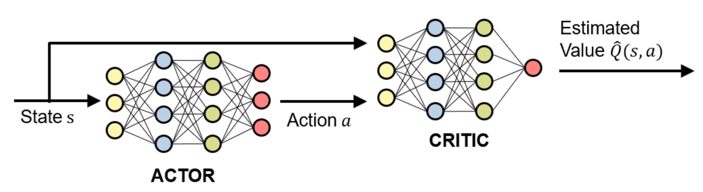
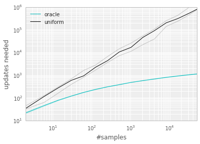
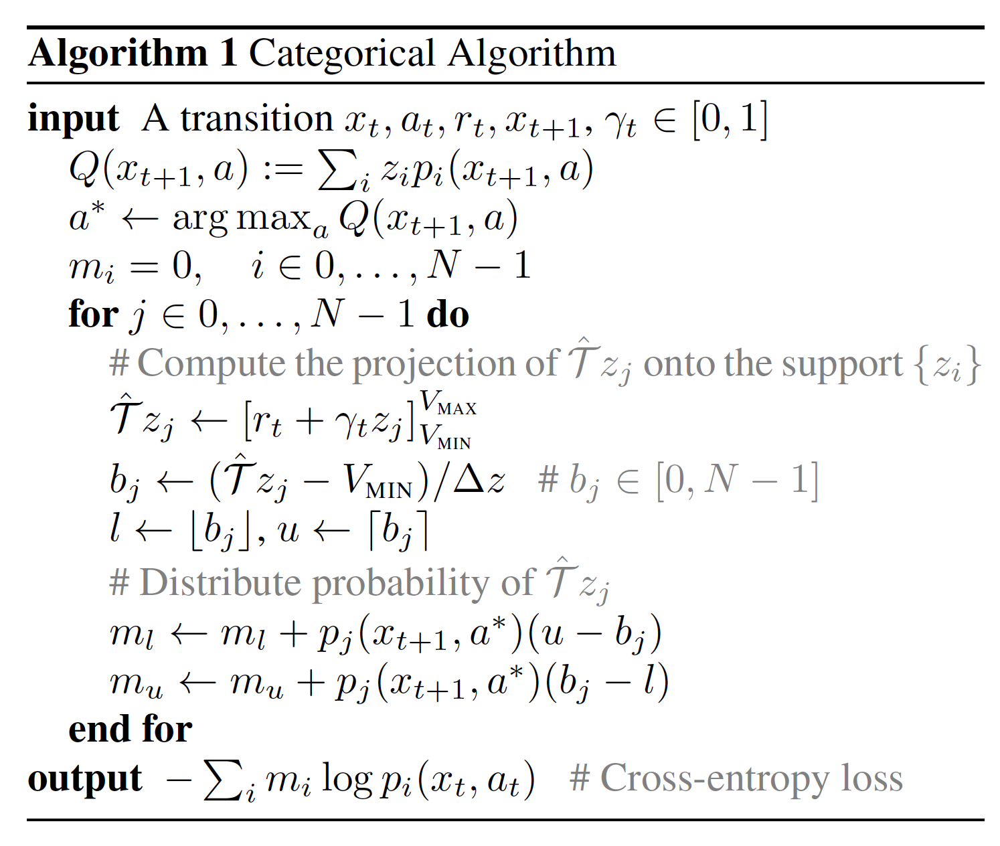
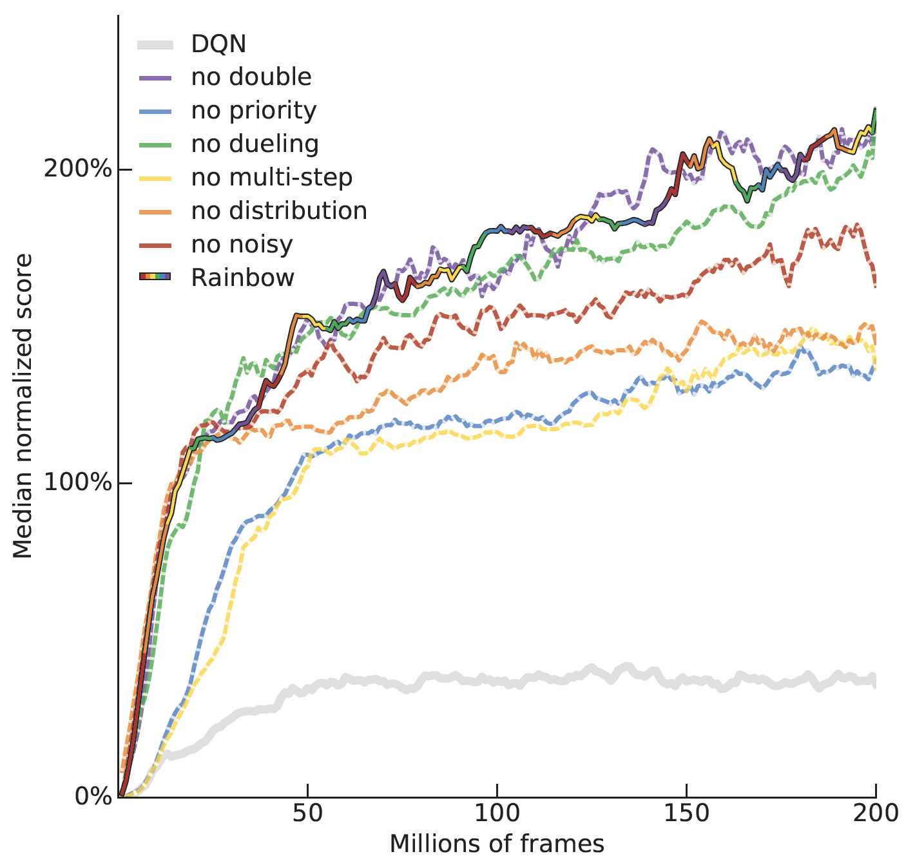

Your browser doesn't support the features required by impress.js, so you are presented with a simplified version of this presentation.
For the best experience please use the latest Chrome, Safari or Firefox browser.
L16: Advanced Off-Policy RL
Hao Su
(slides prepared with the help from Zhan Ling)
Spring, 2021
Contents are based on website
Agenda
click to jump to the section.
Key Ideas of Off-policy RL
Off-Policy RL
Key ideas:
- Use a replay buffer to store samples that might be collected from long before.
- Build a value network approximator $Q_{\th}(s,a)$ and learn $\theta$ by minimizing the TD loss with samples from the replay buffer.
- Had $Q_{\theta}$ been learned, policy $\pi(s)$ can be considered as solving an optimization problem over the value network:
\[ \pi(s) = \text{argmax}_{a\in\mc{A}} Q_{\th}(s, a)\]
- For discrete action space, the optimum $a$ can be computed by enumerating all possible actions (recall the DQN algorithm).
Recall: Q-Learning for Tabular RL
- Given transitions $\{(s,a,s',r)\}$ from some trajectories, how to improve the current Q-function?
- By Temporal Difference learning, the update target for $Q(S,A)$ is
- $R+\gamma\max_a Q(S', a)$
- Take a small step towards the target
- $Q(S,A)\leftarrow Q(S,A)+\alpha[R+\gamma\max_a Q(S', a)-Q(S,A)]$
- Given $Q$, how to improve policy?
- Take the greedy policy based on the current $Q$
- $\pi(s)=\text{argmax}_a Q(s,a)$
- Given $\pi$, how to generate trajectories?
- $\epsilon$-greedy policy in the environment.
Continuous Q-Learning
- The major challenge for continuous Q-learning is in how we compute $\max_a Q_{\theta}(s,a)$.
- For discrete action space, the optimum $a$ can be computed by enumerating all possible actions (recall the DQN algorithm).
- However, for continuous action space, computing $\max_a Q_{\theta}(s,a)$ cannot be achieved by enumeration.
- Q: How to do Q-learning if the action space is continuous?
Continuous Q-Learning
- The most straight-forward idea: Solving an optimization problem to compute $a$:
\[
\begin{aligned}
&\underset{a}{\text{maximize}}&&Q_{\theta}(s, a)\\
\end{aligned}
\]
- Limitations:
- Very slow!
- May get stuck in local minima.
Continuous Deterministic Policy Network
- If optimizing $a$ every time is too slow, let us use a neural network to memorize the decisions in the past!
- We consider a simple policy family ‐ deterministic policies (Q: Why this is reasonable here, for off-policy RL?).
- Deterministic policies can be approximated as a network $\pi_{\phi}:\mathcal{S}\mapsto \mathbb{R}$.
- Suppose that we have a learned value network $Q_{\theta}(s,a)$. Then, the optimal policy can be obtained by "fine-tuning" our policy network:
\[
\begin{aligned}
&\underset{\phi}{\text{maximize}}&&Q_{\theta}(s, \pi_{\phi}(s))\\
\end{aligned}
\]
- Q: What are the potential benefit of using a policy network other than being faster?
TD-based Q Function Learning
We can still use TD-loss to learn $Q_{\theta}$. Given a transition sample $(s,a,s',r)$:
- In tabular Q-learning, the update target for $Q(s,a)$ is $r+\gamma\max_a Q(s', a)$;
- In continuous deterministic Q-learning, the update target becomes $r+\gamma Q(s', \pi_{\phi}(s'))$.
- In literature, the policy network is also referred as "actors" and the value network referred as "critics"

Have We Finished? Revisit the Three Questions
- Given transitions $\{(s,a,s',r)\}$ from some trajectories, how to improve the current Q-function?
- We have derived the update target for $Q(S,A)=r+\gamma Q(s', \pi_{\phi}(s'))$.
- Given $Q$, how to improve policy?
- We introduced a policy network $\pi_{\phi}$ and update it by solving
\[
\begin{aligned}
&\underset{\phi}{\text{maximize}}&&Q_{\theta}(s, \pi_{\phi}(s))\\
\end{aligned}
\]
- Given $\pi$, how to generate trajectories?
- We also need exploration in contious action space!
Exploration in Continuous Action Space
- For discrete action space, we can use $\epsilon$-greedy.
- For continuous action space, we can add small perturbations to the actions output by the policy network to do exploration.
- Example:
- Gaussian noise: $\mathcal{N}(0, \sigma^2)$;
- Ornstein-Uhlenbeck random process (temporally correlated random noises).
Deep Deterministic Policy Gradient (DDPG)
- Initialize replay buffer $D$, Q network $Q_{\th}$ and $\color{red}{\pi_\phi}$.
- For every episode:
- Sample the initial state $s_0\sim P(s_0)$
- Repeat until the episode is over
- Let $s$ be the current state
- select $a= \pi_\phi(s) + \text{ random noise }$
- Execute $a$ in the environment, and receive the reward $r$ and the next state $s'$
- Add transitions $(s,a,s')$ in $D$
- Sample a random batch from $D$ and build the batch TD loss
- Perform one or a few gradient descent steps on the TD loss
- Perform one or a few gradient descent steps on the policy loss
Trouble and Tricks in Practice
- DQN and DDPG are concise, but they cannot get state-of-the-art performance in practice.
- Troubles in practice:
- Value overestimation
- Rare beneficial samples in replay buffer
- Slow reward propagation
- Tricks in practice:
- Dueling Network
- Distributional action-value network
- State-conditional exploration noise
Tricks to Overcome Value Estimation
Issue: Value Overestimation
- Value network approximates the value. Policy networks are optimized over value networks.
If $Q$ of some sub-optimal action $a'$ is overestimated and larger than the optimal one,
policy network tends to choose suboptimal actions and hurts the performance.
- Theoretical intuition:
- Target of TD update is $Q^{target}_{\th}(s) = r(s, a, s') + \gamma \max_{a'} Q_{\th}(s', a')$
- Assume $Q_{\theta}(s, a) = Q_{gt}(s, a) + \epsilon$ with $\bb{E}[\epsilon]=0$, where $Q_{gt}$ is the ground-truth $Q$ function
- $\mathbb{E}_{\epsilon}[\max_{a'} Q_{\th}(s', a')] = \mathbb{E}_{\epsilon}[\max_{a'}Q_{gt}(s, a) + \epsilon] \geq \max_{a'} \mathbb{E}_{\epsilon}[Q_{gt}(s', a') + \epsilon] = \max_{a'} Q_{gt}(s', a')$
- In practice, $\mathbb{E}_{\epsilon}[\max_{a'} Q_{\th}(s', a')] > \max_{a'} Q_{gt}(s', a')$, which make target of TD update also overestimated.
Double Q-Learning
- The $\max$ operator in Q-learning uses the same values both to select and to evaluate an action. This makes it more likely to select overestimated values,
resulting in overoptimistic value estimates.
- Solution: Decouple the selection from the evaluation with two value functions $Q_{\th_i}(s, a), i=0, 1$.
- Discrete action space:
- Randomly choose one of the $Q$ functions to collect samples from the environment.
- The TD loss of $Q_{\th_i}$ is
\[
TD_{\th_i}(s,a)=\|Q_{\th_i}(s,a)-[r(s,a,s')+\gamma Q_{\color{red}{\th'_{1-i}}}(s',\text{argmax}_{a'} Q_{\th_i}(s', a'))]\|^2.
\]
- Continuous action space (DDPG-based): keep $(Q_{\theta_0}, \pi_{\theta_0})$ and $(Q_{\theta_1}, \pi_{\theta_1})$
- Randomly choose one of the $\pi$ functions to collect samples from the environment.
- The target of $Q_{\th_i}$ is randomly chosen from
\[
r(s,a,s')+\gamma Q_{\color{red}{\th'_{1-k}}}(s',\pi_{\th_k}(s')).
\]
- In theory and practice, double Q-Learning has advantages over Q-Learning in some cases.
Clipped Double Q-Learning
- Double Q-Learning may still overestimate values. Clipped double Q-Learning (for continuous action case) claims to further suppress value overestimation by
\[
TD_{\th_i}(s,a)=\|Q_{\th_i}(s,a)-[r(s,a,s')+\gamma \color{red}{\min_j Q_{\th_j}}(s', \pi_{\phi}(s'))]\|^2
\]
- With clipped double Q-learning, the value target is smaller than that with a single value function.
- This update rule may induce an underestimation bias. The authors claim that this is far preferable to overestimation
bias, as unlike overestimated actions, the value of underestimated actions will not be explicitly propagated
through the policy update
- In practice, two value functions are enough. Using more cannot provide extra benefits.
- Note that there is only one policy network. It is a multi-head structure. This architecture has been used by multiple successful continuous Q-learning frameworks.
Tricks to Address Rare Beneficial Samples
Issue: Rare Beneficial Samples
in the Replay Buffer
- In environment that suffers from hard exploration, reward signals are rare in replay buffer. It is not efficient to uniformly choice training samples from the buffer.
- Example: Montezuma's revenge, Blind Cliffwalk.
Blind Cliffwalk
- Two actions at each state: $\color{black}{\text{right}}$ and $\color{red}{\text{wrong}}$.
- Episode is terminated whenever the agent takes the $\color{red}{\text{wrong}}$ action.
- Agent will get reward $1$ after taking $n$ $\color{black}{\text{right}}$ actions.
Analysis with Q-Learning
- In expectation, they are $\mathcal{O}(2^n)$ transitions with reward $0$ in replay buffer before the agent get the first reward $1$.
- With uniform sampling, the agent learn from successful transitions with probability $\mathcal{O}(2^{-n})$ in the beginning stage and this will dramatically slow down the reward propagation.
- Compare performance between uniform sampling and oracle sampling. Oracle greedily selects the transition that maximally reduces the global loss in its
current state.

Prioritized Experience Replay
- Define a priority $p_i$ of a transition pair $i=(s, a, s')$ with TD error $\delta= Q_{\th}(s) - (R + \gamma Q_{\th}(s', \pi_{\phi}(s')))$.
- Proportional prioritization: $p_i = |\delta| + \epsilon$, where $\epsilon$ is a small positive constant.
- Rank-based prioritization $p_i = \frac{1}{\text{rank}(|\delta_i|)}$, where $\text{rank}(|\delta_i|)$ is the rank of absolute value of TD error in the replay buffer.
- Probability of sampling transition $i$ as $P_i = \frac{p_i^\alpha}{\sum_{k} p_k^\alpha}$
where $p_i > 0$ is the priority of transition $i$.
- Comment: Probability of being sampled is monotonic in a transition’s priority and guaranteeing a non-zero probability even for the lowest-priority transition.
Prioritized Experience Replay
- Reinforcement learning process is highly non-stationary, thus the variance of update is typically very high. Only focusing on bad transitions exacerbates the issue. To stabilize training, importance sampling is added to smooth out the distribution to estimate the policy update:
- $w'_i = (N P_i)^{-\beta}, w_i = \frac{w'_i}{\max_j w_j'}$.
- TD loss with importance sampling is $\sum_i w_i ||\delta_i||^2$.
- In practice, $\beta$ is linearly annealed from its initial value, e.g., $\beta_0=0.5$, to $1$.
Tricks to Accelerate Reward Propagation
Slow Reward Propagation
- Q-learning accumulates a single reward and then uses the greedy action at the next step to bootstrap.
The propagation speed is very slow when horizon is long and reward signal is sparse.
- Solution: $TD(n)$ can be used to update value network.
-
$TD_{\th_i}^n(s_t,a_t)=\|Q_{\th}(s_t,a_t)-[\sum_{i=0}^{n-1} \gamma^i R(s_{t + i},a_{t+ i},s'_{t + i})+ \gamma^n Q_{\th}(s_{t+n}', \pi_{\phi}(s'_{t+n}))]\|^2$.
-
$n=3$ is used in Rainbow for Atari games.
Tricks in Value Network Architecture Design
Dueling Network
- For discrete action space, researchers find that decoupling $Q(s, a)$ into $V(s)+A(s, a)$ can help.
- Intuitively, $V$ only depends on $s$, which captures features depending only on states and may generalize to similar states.
$A$ should focus on how action may affect the performance.
- A simple idea is represent $Q_{\th}(s, a)$ with $V_{\th_S}(s) + A_{\th_A}(s, a)$.
However, adding any constant $C$ to $V_{\th_V}(s)$ and subtracting $C$ from $A_{\th_A}(s, a)$ also works.
This decomposition is unidentifiable, and $V_{\th_V}(s)$ may not recover the value function.
- One possible solution: $Q_{\th}(s, a)$ with $V_{\th_V}(s) + (A_{\th_A}(s, a) - \max_{a' \in \mathcal{A}} A_{\th_A}(s, a'))$.
Now, for $a^* = \text{argmax}_{a' \in \mathcal{A}} Q_{\th}(s, a') =\text{argmax}_{a' \in \mathcal{A}} A_{\th_A}(s, a')$.
So $Q_{\th}(s, a^*) = V_{\th_V}(s)$, which means $V_{\th_V}(s)$ really represents the value function.
- In practice, $\text{average}$ is used to replace the $\max$ operator in $V_{\th_V}(s) + (A_{\th_A}(s, a) - \max_{a' \in \mathcal{A}} A_{\th_A}(s, a'))$, which increases instability.
Tricks by Considering Uncertainty of Value Estimation
Stochasticity in the Environments
- In stochastic environment, for example, stepping with an action can provide different results. Then scalar $Q$ value can only provide the mean and lost the information about the reward distribution.
- Even in deterministic environments like Atari games, stochasticity does occur in a number of guises:
- from state, for example image, aliasing
- learning from a non-stationary policy
- from approximation errors.
Value Network with Discrete Distribution
- Instead of one value, value network predicts a discrete distribution on a set of atoms $\{z_i = V_{MIN} + i \Delta_z | 0 \leq i < N \}, \Delta z := \frac{V_{MAX} - V_{MIN}}{N - 1}$. The probability of atom $z_i$ is $p_i$.
- $Q_\th(s, a) = \sum_i p_{\th, i}(s, a) z_i$.
- Update rules of $Q$, $x_t$ is state at time-step $t$.

Tricks in Leveraging State-conditioned Exploration Noise
Read by Yourself
State-conditioned Exploration Noise
- Using the same exploration policy for all the states is not efficient in practice.
Noisy Nets (For Discrete Action Space)
- For discrete action space, we can replace the last linear layer of the value network $Q_\th$ with a noisy linear layer to form a noisy $Q$ network and generate exploration actions directly from the noisy $Q$.
- Let original linear layer be $y = wx + b$, noisy linear layer will be $y = wx + b + (\sigma^w \circ \epsilon^w x + \sigma^b \circ \epsilon^b)$, where $\circ$ represents element-wise multiplication, $\sigma^w, \sigma^b$ are learnable parameters, $\epsilon$ are noise random variables.
- Greedily selecting on the noisy $Q$ value has already provided exploration. Other parts are similar to DQN. The only difference is that noisy $Q$ network is used to replace the classical $Q$ network.
- Updating $Q$ network with TD loss.
Parameterized Squashed Gaussian policy (For Continuous Action Space)
- For continuous action space, the policy network can output a parameterized Gaussian distribution.
- $\pi_\phi(s) = \tanh(\mu_\phi(s) + \sigma_\phi(s) \circ \epsilon)$, where $\epsilon = \mathcal(0, I)$.
- $\mu_\phi(s)$ is the mean value of the agent's policy at state $s$, which can be used in evaluation.
- $\sigma_\phi(s)$ is the standard deviation of the exploration noise.
- In practice, policy network predicts $\log \sigma$ and clip it in to range $[\log \sigma_{min}, \log \sigma_{max}]$.
In SAC, $\log \sigma_{min} = -20, \log \sigma_{max}=2$.
- To train $\sigma_\phi(s)$, we need entropy regularization which will be discussed in SAC in the next lecture.
Read by Yourself
Off-Policy RL Frameworks in Practice
Practical Off-Policy Algorithms
- In practice, a good off-policy algorithm needs to ensemble tricks ans solve exploration problem.
- Example algorithms:
- Rainbow
- Soft-Actor-Critic
Rainbow
- For discrete action space, Rainbow is a famous algorithm which ensembles all the tricks to get better performance.
- Tricks used in Rainbow:
- Prioritized replay
- Multi-step learning / TD(3) loss
- Distributional RL
- Noisy Net
- Double Q-learning
- Dueling Q-learning
Ablation study of tricks in Rainbow
- Prioritized replay, multi-step learning, distributional RL are the most important tricks in Rainbow.

Soft-Actor-Critic (SAC)
- For continuous action space, Soft-Actor-Critic is a famous algorithm which combines some tricks with an entropy-based exploration method.
- Tricks used in SAC:
- Clipped Double Q-Learning
- Parameterized Squashed Gaussian policy